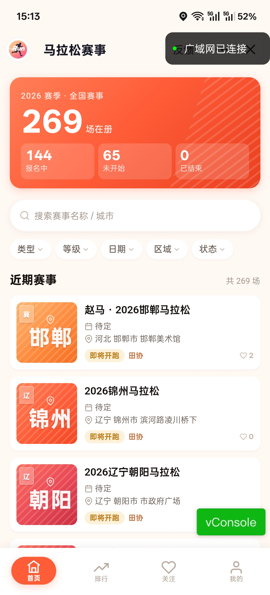
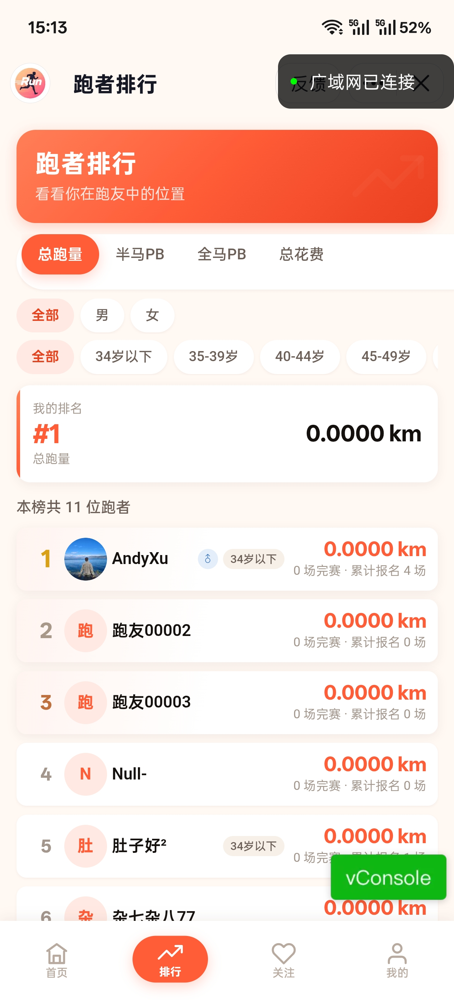
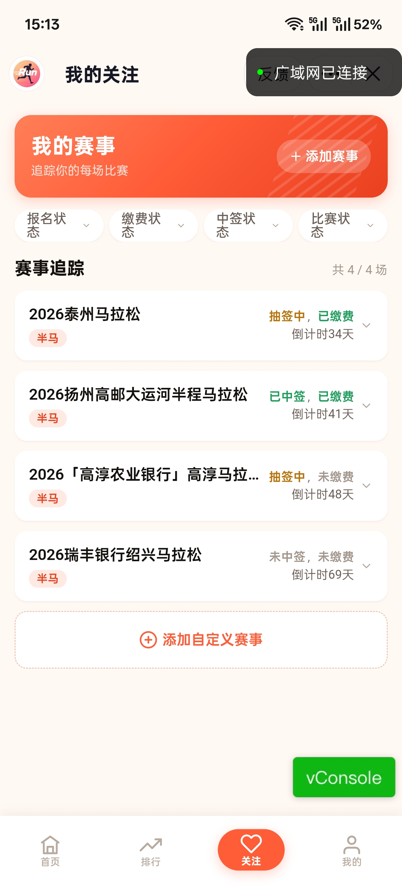
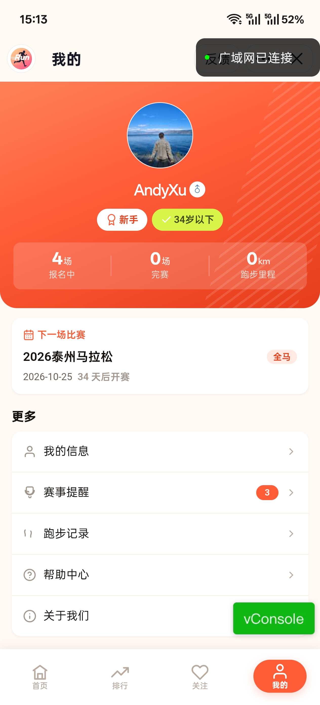
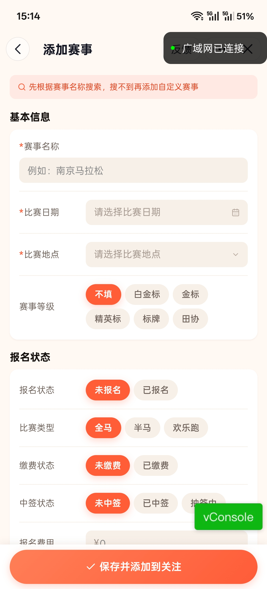

背景、方案与关键工程决策
面向马拉松爱好者的赛事查询与个人追踪工具：把「找赛事 → 判断要不要报 → 盯报名 / 缴费 / 中签 → 沉淀个人战绩」 这条散落在十几个公众号与网页里的链路，收进一个六个页面的小程序里。
前端是 Taro 4.1 + React 18 + TypeScript，一套代码跨编译微信小程序与 H5；后端是 FastAPI + SQLAlchemy 2.0 异步服务（7 张业务表 / 26 个端点 / 7 个 Alembic 迁移版本），提供赛事列表与多维筛选、关注收藏、 报名状态流转、跑者排行、个人战绩统计与配置字典六组接口。数据不靠人工整理，而是一条 「列表卡片抓取 → LLM 联网补全 → 二轮筛选 → 增量 diff 入库」的富化管道， 由 APScheduler 每天定时跑，原始数据全程留痕可审计。
zuicool_event_id 为增量键），只对新增或卡片字段变化的赛事重新富化，原始卡片 / 富化 / 最终三态 JSON 全量留痕。mi_event_source
表，保留来源 URL、抓取时间与内容哈希，字段来源可回溯。mi_registration 表，
关注页用 chips 随手切换，并反算开赛倒计时；同一张表同时承载完赛时间、参赛号码与 PB 标记，驱动个人战绩与排行榜。Taro.login → 后端换 openid → JWT 静默登录，H5 保留密码登录用于本地调试。围绕「找到一场值得跑的赛事」这一个目标做减法
关键词搜索 + 赛事类型 / 报名状态 / 赛事级别 / 省份 / 开赛月份五个下拉， 筛选项全部由后端从真实数据里聚合返回，不会出现「选了却没有结果」的空枚举。
卡片直接给结论：报名中 / 即将开跑 / 比赛中 / 已结束四态色彩标识、起止日期、地点、 报名费与赛事级别；报名中与即将开跑的赛事优先上浮，热门与推荐单独排序。
关注后的赛事进入追踪面板：三个状态 chip 随手切换即可记录「已报名 / 已缴费 / 抽签中 / 已中签」， 报名费可就单场覆盖默认值，卡片同时显示距开赛天数与缴费、中签进度。
总跑量、半马 PB、全马 PB、总花费四个维度横向对比，PB 榜只统计有完赛记录的用户； 支持按性别与年龄段筛选，登录后额外回传「我的排名」。
报名场次、累计花费、累计里程三张统计卡，近期完赛列表展示完赛时间与参赛号码， 个人最好成绩单独打 PB 徽章，跑过的每一场都留得下痕迹。
数据源没覆盖的小众赛事可以自己录：填名称、类型、日期、地点、级别与费用， 一次提交同时建好赛事、收藏、报名三条关联记录，直接进入追踪面板。
Taro 4 同一份代码编译微信小程序与 H5，登录方式按端分流：小程序静默微信登录、 抖音端走抖音 code 换取 openid，H5 保留账号密码登录方便本地联调。
晨曦跑道主题：珊瑚橙主色 + 青柠强调色，暖白纸面与棕调暖影

赛事列表 · 搜索 · 五维筛选

总跑量 · 半马 / 全马 PB · 总花费

报名 / 缴费 / 中签三维追踪 · 倒计时

报名场次 · 累计花费 · 累计里程 · 完赛记录

自定义赛事 · 保存并关注
不靠人工整理，也不把整条链路交给 AI：确定性规则负责结构化解析，LLM 只在字段缺失时联网补全， 每天定时增量跑一次。
适配器抓取最酷赛事列表页，规则解析出赛事名、开赛日期、地点、报名窗口、报名链接与封面图， 产出标准化候选对象。
把卡片原始 JSON 交给 LLM 联网检索，补齐简介、路线、主办方、报名费等缺失字段， 再做二轮筛选过滤噪声，得到最终 JSON。
以赛事 ID 为增量键、关键卡片字段的 sha1 哈希判断内容是否变化，只对新增或变化的赛事重新富化， 原始 / 富化 / 最终三态 JSON 全量留痕，再 upsert 进正式赛事表。
前后端分离，数据管道独立成层，可单独触发与观测